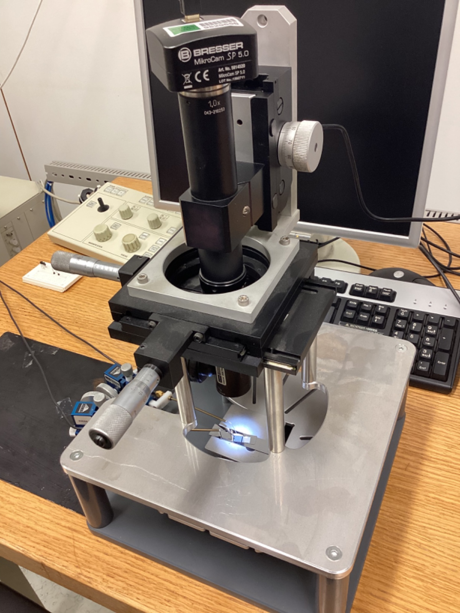
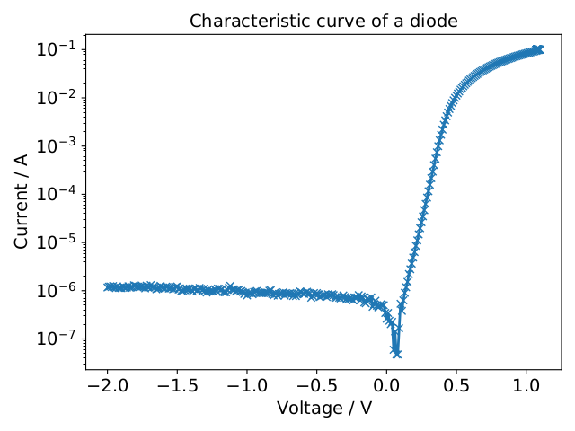
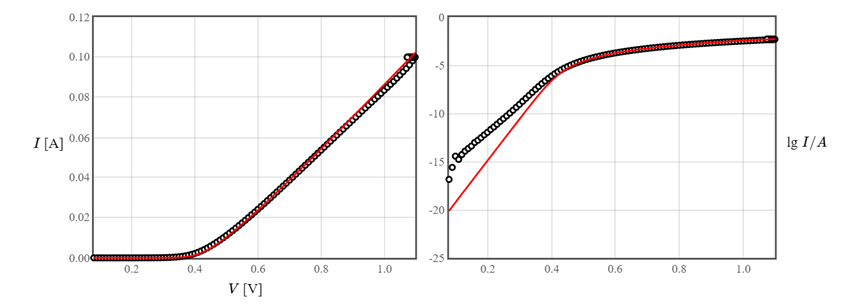
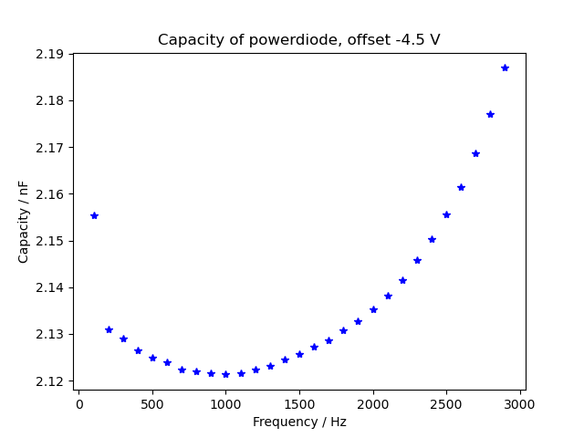
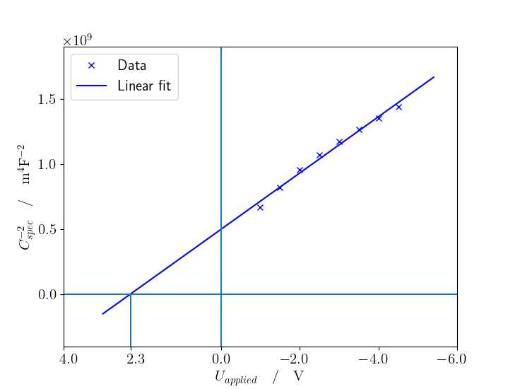

This laboratory session was focused on getting the characteristics of a power diode, which consists of many diodes in parallel so that it can bear higher values of voltage and current across its terminals.
|  |
| Powerdiode with contacts (only cables visible) under the microscope. |
First the powerdiode was connected to a sourcemeter, so that the IV curves could be studied, and to get the series resistance.
Then an AC signal together with a DC offset was applied to the powerdiode, to measure its impedance in reverse bias. From this, its capacity and acceptor doping concentration were calculated, and finally from the doping concentration also the series resistance.
More information about the IV characteristics of a diode can be found in PN diode IV characteristics.
The following instruments were used:
HAMEG HMO3524 Digital Oscilloscope
SRS SR570 Current Preamplifier
SRS SR830 Lock-in Amplifier
KEITHLEY 3390 Arbitrary Waveform Generator
Keithley 2600 Series Sourcemeter
Bresser MikroCam SP 5.0
For the IV-curve, the sourcemeter was connected directly to the powerdiode.
To measure the impedance of the diode in reverse bias, the waveform generator was used to generate the AC signal with varying frequencies, together with the DC offset. Its sync output was connected to the lock-in amplifier, that was used to measure the phaseshift between current and voltage. The signal output of the waveform generator was connected via the oscilloscope to the powerdiode. The other contact of the powerdiode was connected to the input of the current preamplifier. From there, the signal was connected via the oscilloscope to the lock-in amplifier.
|  |
| IV-curve of the powerdiode in forward- and reverse bias. The decreasing slope beyond +0.5V is due to the series resistance. |
The series resistance can also be calculated using the Least squares fit of the diode equation. The equation of a real diode describes its I-V curve, and is expressed as follows: \[ \begin{equation} I = I_S (exp(\frac{e (V-IR_S)}{\eta k_BT-1})) [A] \end{equation} \]
Here, $I_S$ is the saturation current, $e$ is the charge of an electron, $k_B$ is Boltzmann's constant, $R_S$ is the series resistance, $\eta$ is the nonideality factor and T is the temperature.
The nonideality factor is added to the formula to take into account the recombination and generation of electron-hole pairs. In forward bias, there is less current than expected due to the recombination, and in reverse bias there is more than expected. In low bias, $\eta=2$, as the recombination dominates, and in high bias $\eta=1$, following the ideal behaviour.
The series resistance appears in real diodes because outside the p-n junction there are semiconducting regions that have not been depleted yet, which form a resistor in series. It becomes noticeable at high voltages.
Using the fit, the value we get for the series resistance is:
\[ \begin{equation} R_S = 5.92 \, \Omega \end{equation} \]
|  |
We can see in the second graph that the data does not match perfectly the fit calculated for small values of the voltage, which comes from a mistake in the programming of the website used. However, that does not interfere in the calculation of the series resistance, it only affects the nonideality factor.
From the capacity of a diode in reverse bias, its doping concentration and also its resistance can be calculated. To measure the capacity, we applied a sinusoidal AC signal to the powerdiode, together with a DC offset to reverse bias it. The amplitude of the AC signal was 1 V, and the frequency was changed from 100Hz to 2900Hz in 100Hz steps. Then the impedance Z was measured, which is connected to the capacity via the simple relation \[ \begin{equation} C = \frac{1}{\omega Z}. \end{equation} \] Additionally the I-U-phaseshift was measured, which for a capacity should be 90°, to have some quality control of the setup.
|
This was repeated for different DC offsets: -1V, -1.5V, -2V, -2.5V, -3V, -3.5V, -4V and -4.5V. A smaller offset than -1V is not possible, because the amplitude of the AC signal is 1V and a smaller offset would forward-bias the powerdiode around the maximum of the AC signal. For -4.5V offset, the measured capacities are
|  |
The average capacities at different offsets are
As a check, the capacity of the powerdiode in reverse bias was also estimated to be around
\[ \begin{equation}
C = \varepsilon \times 81mm^2 / 10 \mu m = 0.86 nF
\end{equation} \]
which is on the same order of magnitude as the measured values.
For a two-sided abrupt p-n-junction, the width of the depletion region is
\[ \begin{equation}
W = \sqrt{\frac{2 \varepsilon (N_D + N_A) (V_{bi}-V)}{e N_D N_A}},
\end{equation} \]
and with $N_D >> N_A$ (one-sided junction), this reduces to
\[ \begin{equation}
W = \sqrt{\frac{ 2 \varepsilon (V_{bi}-V)}{e N_A} }.
\end{equation} \]
Since the width of the depletion region of a diode determines its specific capacity (=capacity per unit area),
\[ \begin{equation}
W=\frac{\varepsilon}{c_j}
\end{equation} \]
one can obtain $V_{bi}$ and $N_A$ by measuring the capacity at different reverse-bias-offsets.
From equations (4) and (5) we get
\[ \begin{equation}
\frac{1}{c_j^2} = \frac{2 (V_{bi}-V)}{e \varepsilon N_A},
\end{equation} \]
which is a linear equation in $V$. So one must plot $\frac{1}{c_j^2}$ at different offsets, then the slope of the resulting line
equals $\frac{2}{e \varepsilon N_A}$, and the line intersects the x-axis at $V_{bi}$.
|  |
From this, the built-in voltage is $V_{bi} = 2.3V$, which is much too high for a silicon diode, it should be around $0.6V$. The slope of the fit line leads to \[ \begin{equation} N_A = 5.4 \times 10^{20} m^{-3}. \end{equation} \]
Since $N_D >> N_A$, the p-doped-side will be much thicker than the n-side. For the series resistance in forward bias, we can then assume that the powerdiode only consists of the p-side.
The hole concentration in the p-side is simply
\[ \begin{equation}
p_p = N_A,
\end{equation} \]
and the electron contribution to the conductivity in the p-side can be neglected. The carrier mobility in silicon can be calculated here, for $T=300K$ and $N_A=5.4 \times 10^{14} cm^{-3}$ it is $\mu_h = 283.9 \, cm^2/Vs$.
The conductivity of the p-side is then
\[ \begin{equation}
\sigma_p = p_p \, e \, \mu_h = 0.02476 \, \Omega^{-1} cm^{-1}.
\end{equation} \]
With the thickness of the diode $d = 120\mu m$ and its area $A = 81 mm^2$, the total resistance is
\[ \begin{equation*}
R = \frac{d}{\sigma A} = 0.598 \, \Omega.
\end{equation*} \]
This is almost exactly 1/10 of the result with the other method, so we checked everything twice if there is some simple mistake, but found none.